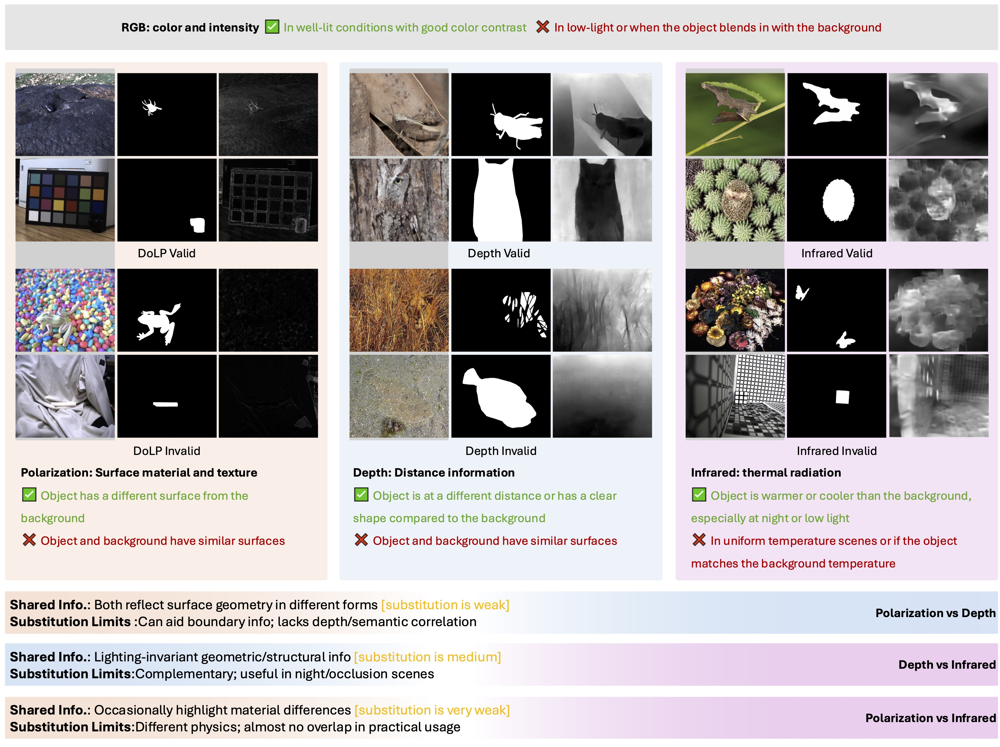
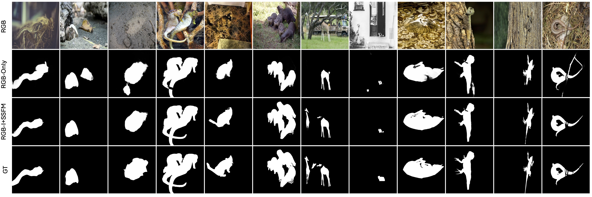

Figure.A1 Additional qualitative result images of UniCOS-I (RGB-Infrared).

Figure.A2 Examples of effective and ineffective cases in making the object easier to detect using Polarization (DoLP), depth, and infrared modalities. From left to right: RGB image, ground truth, and corresponding modality visualization.

Figure.A3 Visual results comparing the use of RGB only versus the combination of RGB and pseudo-infrared with our SSFM for feature fusion and complement in the state space. Our method improves object localization and contour sharpness, reducing errors in complex scenes.